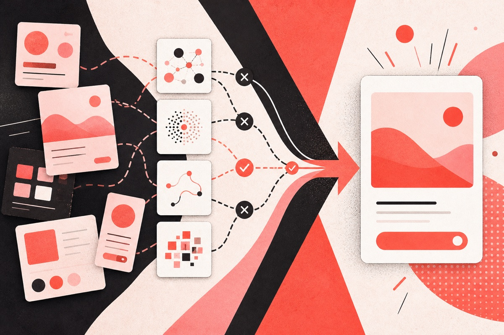

02 WRITING ARCHIVE
文章与思考
写作帮助我理清判断，也把实践中真正有价值的部分分享给更多人。这里收录关于 AI 产品、产品设计与工作方法的持续思考。
6 篇完整文章 · 持续更新


NotebookLM 产品拆解：AI 知识产品如何建立用户信任？
从 NotebookLM 同页出现“2—0—2 个来源”的状态不一致切入，分析知识边界、证据验证和成果溯源如何共同建立用户信任。
阅读全文
从 Prompt 到 Skill：AI 产品经理如何设计一个可交付的任务闭环
从任务边界、人机分工、验收与迭代出发，拆解如何把一次性 Prompt 设计成可重复交付的 Skill 任务闭环。
阅读全文
Prompt 即界面？AI 产品真正要设计的，是可控的任务闭环
从 Canvas、Artifacts 与 Firefly 的产品机制出发，分析 Prompt 之外的边界确认、状态反馈、结果验证、局部修订和安全恢复。
阅读全文
— END OF CURRENT ARCHIVE
新的实践与判断，会继续记录在这里。